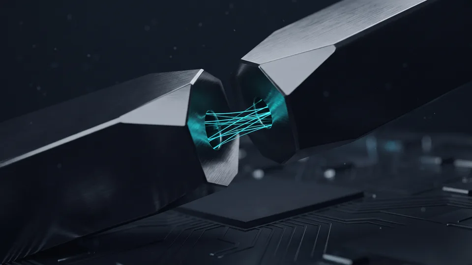

E-Ticaret Ödeme Entegrasyonu Tam Olarak Neyi Kapsar?
E-ticaret ödeme entegrasyonu, mağaza yazılımı ile banka arasındaki kart verisi akışını SSL, 3D Secure ve sanal POS araçlarıyla kuran teknik bağlantıdır. Üç katman vardır: taşıma güvenliği, kimlik doğrulama ve tahsilat. Her katmanın kendi aracı ve kendi test yöntemi bulunur. Bir katman eksikse banka işlemi riskli görür.
E-ticaret ödeme entegrasyonunda katmanları ayırmak sorumluluğu da ayırır. SSL sertifikası sizin sunucunuzda durur. 3D Secure kart sahibinin bankasında çalışır. Sanal POS tanımını ise anlaşmalı banka veya ödeme kuruluşu açar. Arıza çıktığında hangi kapıyı çalacağınızı bu ayrım belirler. Peki testi nereden başlatmalı? Üçünden de aynı gün: e-ticaret ödeme entegrasyonu katmanları ancak birlikte denendiğinde güvenilir sonuç verir. E-ticaret geliştirme hizmetimizde bu üç katmanı tek bir kurulum planında topluyoruz.
Sanal POS, ödeme geçidi ve banka hangi noktada devreye girer?
Sanal POS, bankanın işletmenize tahsis ettiği sanal kart terminalidir. Ödeme geçidi ise mağaza ile bu terminal arasında mesaj taşıyan yazılım köprüsüdür. Müşteri kartını girer, köprü isteği bankaya iletir, banka provizyon yanıtını döner. Bu üç durak arasındaki tahsilat hattı kesintisiz çalışmalı; tek bir halka koparsa işlem düşer.
SSL Sertifikası Kurulumu Nasıl Doğru Yapılır?
Doğru kurulum üç işten oluşur: alan adı doğrulaması, zincir sertifikanın eksiksiz yüklenmesi ve tüm HTTP trafiğinin HTTPS'e yönlendirilmesi. SSL sertifikası, tarayıcı ile sunucu arasındaki trafiği şifreleyen dijital kimliktir. Yönlendirmeyi kurmazsanız ödeme sayfası karışık içerik uyarısı verir. Uyarıyı gören müşteri kart bilgisini yazmaz.
Sertifikayı yükledikten sonra iş bitmez. Zincirde ara sertifika eksikse masaüstü tarayıcı sorunu göstermez, eski Android cihazlar hata verir. Bu yüzden kurulumu bir dış test aracıyla ve gerçek telefonla ayrı ayrı denetliyoruz. HSTS başlığını da ekliyoruz; böylece tarayıcı siteye yalnız TLS şifrelemesiyle bağlanır. Ülkemizde çevrimiçi ticaretin ölçeği hızla büyüyor: ETBİS 2025 raporuna göre e-ticaret yapan işletme sayısı 634.611'e ulaştı. Bu ölçekte e-ticaret ödeme entegrasyonu, isteğe bağlı bir ek değil.
DV, OV ve EV sertifikaları arasındaki fark nedir?
DV sertifikası yalnız alan adı sahipliğini doğrular ve dakikalar içinde çıkar. OV sertifikası şirket kaydını da kontrol eder. EV sertifikası en ayrıntılı incelemeyi ister. Şifreleme gücü üçünde de aynıdır; fark, kimliğin ne kadar denetlendiğidir. Kurumsal mağazalara OV öneriyoruz, çünkü tüzel kişilik bilgisi sertifikanın içinde görünür.
3D Secure Entegrasyonu Neden Vazgeçilmez?
Bankalar Türkiye'de tüketici kartlarıyla yapılan çevrimiçi satışta 3D Secure'ü fiilen zorunlu tutuyor. 3D Secure, kart sahibini bankası üzerinden doğrulayan güvenli kimlik doğrulama katmanıdır. Doğrulama başarılıysa sahtecilik itirazındaki sorumluluk bankaya geçer. Kurulumda en sık atlanan adım, doğrulama dönüşündeki imzayı sunucu tarafında yeniden hesaplamaktır.
Akış şöyle işler: müşteri kart bilgisini girer, ödeme köprüsü isteği bankaya yönlendirir, banka tek kullanımlık kod veya uygulama onayı ister. Onay dönüşü mağazaya imzalı bir mesajla ulaşır. Bu mesajı doğrulamadan siparişi onaylarsanız açık kapı bırakırsınız. İmza kontrolünü tarayıcıya değil sunucuya yaptırın. Ödeme akışında bu tek kural, sahte onayların önünü keser. Özel yazılım tarafında bu denetimi tek bir doğrulama servisinde topluyoruz.
3DS 2.0 akışı müşteriyi neden daha az yoruyor?
3DS 2.0, işlem sırasında cihaz ve davranış verisini bankaya taşır. Banka riski düşük görürse müşteriye hiçbir kod sormaz; işlem sessizce geçer. Buna sürtünmesiz akış diyoruz. Riskli bulunan denemelerde doğrulama ekranı yine devreye girer. Sonuç nettir: güvenlik düşmeden sepet terki azalır.
Non-secure işlem hangi durumda açılır?
Non-secure, kart hamiline doğrulama sorulmadan alınan işlem tipidir. Yurt dışı kartlarında veya abonelik yenilemelerinde bazı sağlayıcılar sınırlı izin verebilir. Sorumluluk tümüyle mağazada kalır. Bu kapıyı açmadan önce iade riskinizi ve iş modelinizi birlikte değerlendiriyoruz.
Sanal POS Başvurusundan Canlı Ortama Geçiş
Süreç iki aşamada ilerler: evrak onayı ve teknik anahtar teslimi. Sanal POS başvurusu, banka veya ödeme kuruluşuyla imzalanan ticari bir sözleşme sürecidir. Sağlayıcı; vergi levhası, imza sirküleri, site adresi ve mesafeli satış sözleşmesi ister. Canlı anahtarı ise site içeriğini denetledikten sonra veriyor.
Evrak dosyası kadar site içeriği de belirleyicidir. Mesafeli satış sözleşmesi, iptal-iade koşulları, teslimat süresi ve iletişim bilgileri sayfada görünmüyorsa dosya geri döner. Teknik tarafta ise test ortamıyla canlı ortam arasındaki tek fark anahtar olmalıdır. Aynı kod, aynı akış, farklı anahtar. Tek farkın anahtar olması, canlıya geçiş sürprizlerini bitirir.
Test ortamında hangi kart senaryolarını deniyoruz?
Başarılı çekim, yetersiz bakiye, hatalı CVV, 3D doğrulama iptali ve zaman aşımı. Beş senaryonun beşini de her banka için ayrı deniyoruz. Taksitli satış varsa taksit tablosunun sipariş özetiyle birebir eşleştiğini kontrol ediyoruz. Kısmi iade denemesini atlamıyoruz; muhasebe tarafındaki en sık şikâyet buradan çıkıyor.
“2024 yılında 600 bin 800 olan e-ticaret yapan işletme sayısı, 2025'te 634 bin 611'e yükseldi.”
— Ticaret Bakanlığı, Türkiye'de E-Ticaretin Görünümü 2025
Entegrasyon Sonrası Hangi Testleri Yapmalısınız?
Canlıya geçtikten sonra üç kontrol şarttır: gerçek kartla küçük tutarlı sipariş, iade akışı ve sipariş bildirimleri. Bu üçlü, ödeme başarılı görünürken siparişin oluşmaması gibi sessiz hataları yakalar. Testleri ilk hafta boyunca günlük tekrarlıyoruz. Çıkan her hatayı ekran görüntüsüyle kaydediyoruz. Kayıt, banka tarafıyla yazışmayı hızlandırır.
Sessiz hata, e-ticaret ödeme entegrasyonundaki en pahalı arızadır. Müşteri parayı öder, sipariş listede görünmez, çağrı merkezi olayı ertesi gün öğrenir. Bu yüzden ödeme kaydı ile sipariş kaydını iki ayrı yerde eşleştiriyoruz. Günlük mutabakat raporu, tutmayan işlemleri tek bakışta gösterir. E-ticaret ödeme entegrasyonu iyi kurulduğunda, hatayı müşteriden önce size haber verir. E-ticaret SEO tarafında da ödeme adımındaki kopmaları dönüşüm kaybı sayıyoruz.
Webhook ve callback doğrulaması neden kritik?
Callback, ödeme sonucunun müşterinin tarayıcısı üzerinden dönmesidir. Webhook ise sağlayıcının doğrudan sunucunuza gönderdiği bildirimdir. Müşteri sayfayı erken kapatırsa callback kaybolur, webhook yine ulaşır. Sipariş durumunu bu yüzden webhook'a bağlıyoruz. Gelen her bildirimin imzasını ve tutarını sipariş kaydıyla karşılaştırıyoruz.
Güvenli Ödeme Entegrasyonu: 7 Adımlık Kurulum Listesi
Sıra şudur: SSL, yasal sayfalar, sanal POS başvurusu, test senaryoları, 3D Secure imza doğrulaması, webhook bağlantısı, canlı işlem. Sıra bozulduğunda kurulum pahalıya patlar. Aşağıdaki yedi adımı kontrol listesi gibi kullanabilirsiniz. Her adımın sonunda somut bir çıktı bulunur. Eksik kalan adımı tabloya bakar gibi görürsünüz.
Listeyi sahadaki kurulumlarımızdan çıkardık.
- Alan adına SSL sertifikası kurun, tüm trafiği HTTPS'e yönlendirin.
- Mesafeli satış, iade ve gizlilik sayfalarını yayına alın.
- Banka veya ödeme kuruluşuna sanal POS başvurunuzu yapın.
- Test anahtarlarıyla beş kart senaryosunu deneyin.
- 3D Secure dönüşündeki imzayı sunucu tarafında doğrulayın.
- Sipariş durumunu webhook bildirimine bağlayın.
- Canlı anahtarla düşük tutarlı gerçek işlem yapın, sonra iade edin.
Yedi adımı tamamladıysanız e-ticaret ödeme entegrasyonu yayına hazırdır. Kurulumu bizimle yürütmek isterseniz teklif formundan ulaşın; mevcut altyapınızı inceleyip adım listesini işletmenize göre çıkaralım.
İlk 30 günde hangi göstergeleri izliyoruz?
Deneme başına başarı oranı, 3D doğrulama tamamlanma oranı, iade sayısı ve mutabakat farkı. Dört göstergeyi haftalık tabloda takip ediyoruz. Başarı oranı belirgin düşerse önce banka tarafındaki kural değişikliğine bakıyoruz. Sonra cihaz kırılımını açıyoruz; sorun çoğu zaman tek bir cihaz ailesinde toplanıyor.

Ödeme Entegrasyonu Yöntemlerinin Karşılaştırması
| Yöntem | Kurulum yükü | 3D Secure | Kart verisi | Uygun senaryo |
|---|---|---|---|---|
| Banka sanal POS | Yüksek | Mağaza yönetir | Sunucunuzdan geçer | Tek bankada yüksek hacim |
| Ödeme kuruluşu | Orta | Sağlayıcı yönetir | Sağlayıcıda | Çok bankalı taksit |
| Ortak ödeme sayfası | Düşük | Sağlayıcıda | Uğramaz | Teknik ekipsiz mağaza |
| Cüzdan butonu | Düşük | Cüzdanda | Cüzdanda | Mobil tekrar eden satış |
Kapsamınıza uygun yol haritasını birlikte çıkaralım; adımları ve zamanlamayı netleştirelim.
Kapsam çıkaralım Hizmet sayfasını görÖdeme adımı, mağazanızın kasasıdır. Kasayı üç araçla güvence altına alıyoruz: SSL, 3D Secure ve doğru yapılandırılmış sanal POS. Kurulumu sıraya koyan, testi disipline eden ve mutabakatı otomatikleştiren bir e-ticaret ödeme entegrasyonu, hem sepet terkini hem operasyon yükünü düşürür. Başlamadan önce mevcut altyapınızı birlikte gözden geçirelim.